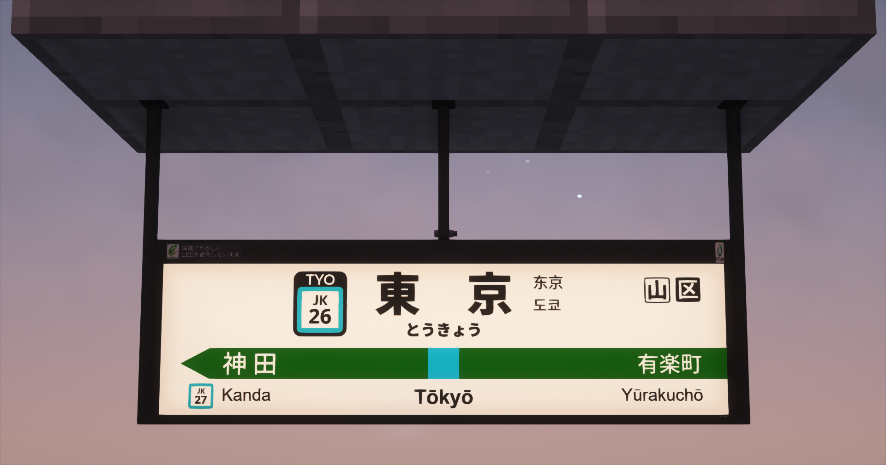
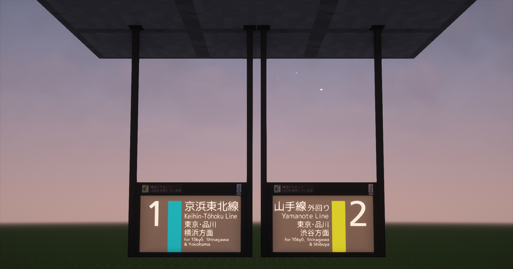
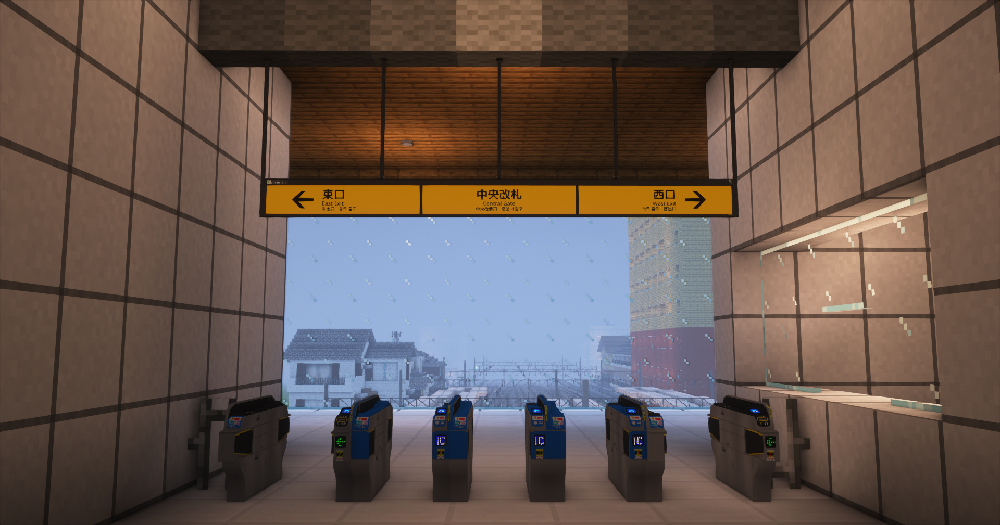
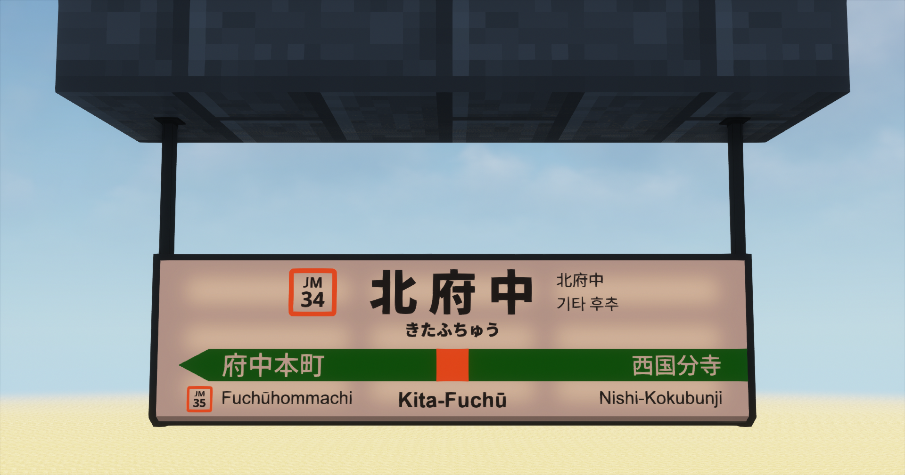
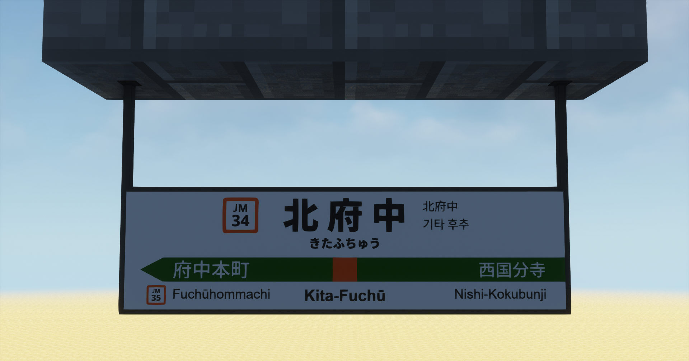
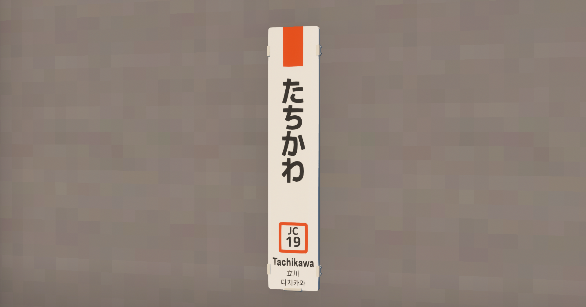

駅名標キット ー
JR東日本で採用例があるものの中で大まかにピックアップ

SE型吊下式駅名標
JR東日本で多く採用例がある、LEDで点灯可能な駅名標。
非常にスタンダードで、どんな駅にも馴染みやすい。

応用編
番線標や構内案内などは、サイズを変えれば再現が可能。
(厳密な違いはあるかもしれない)


B型吊下式駅名票
一昔前の標準型、内部に蛍光灯が搭載されている駅名標。
往年のJR東日本といえばこれ。

非電照式駅名票
一部の駅で見かける、照明がないタイプの駅名標。
夜の視認性は駅の照明に依存するのが難点。

縦型駅名標
柱や壁に設置されている、平仮名の駅名標。
とりあえず柱にぺたぺたしておけばOK

ダウンロード
このKITのダウンロードは下記ボタンから。
ボタンを押下していただくと、Githubのページに遷移します。
"SE型吊下式駅名標"以外は、次回更新で追加予定です。ご了承ください。